Meet the low-cost, open-source split keyboard where every key floats on magnets instead of metal springs—turning continuous physical depth into expressive music, 360° analog game vectors, and effortless tactile typing.
Engineered from scratch for affordable fabrication: a low-cost standard PCBA architecture, 100% support-free 3D printing on everyday desktop printers, and lifted like an architectural drawbridge for natural ergonomic comfort.
FloatForce V5.0: 100% springless magnetic levitation switch. 3 neodymium N52 magnets create a progressive force curve read continuously by a ratiometric Hall sensor.
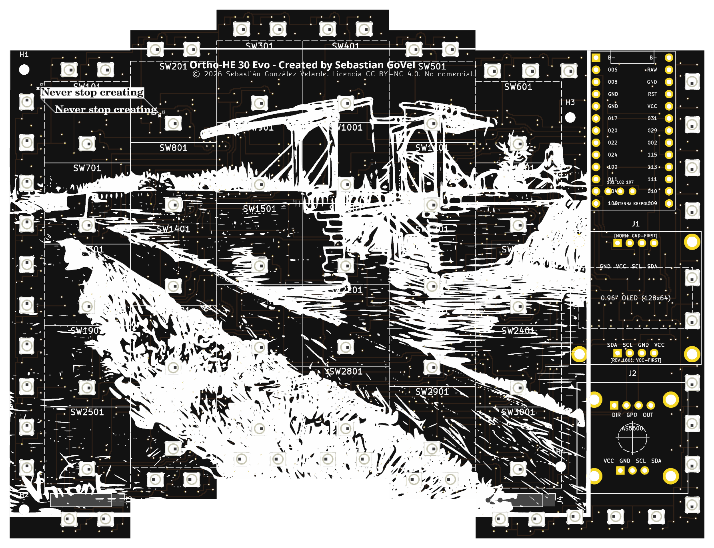
Monolithic front art canvas with zero top-side SMD parts. All 30 Hall sensors, multiplexers, and power-gating circuitry reside exclusively on the bottom layer.
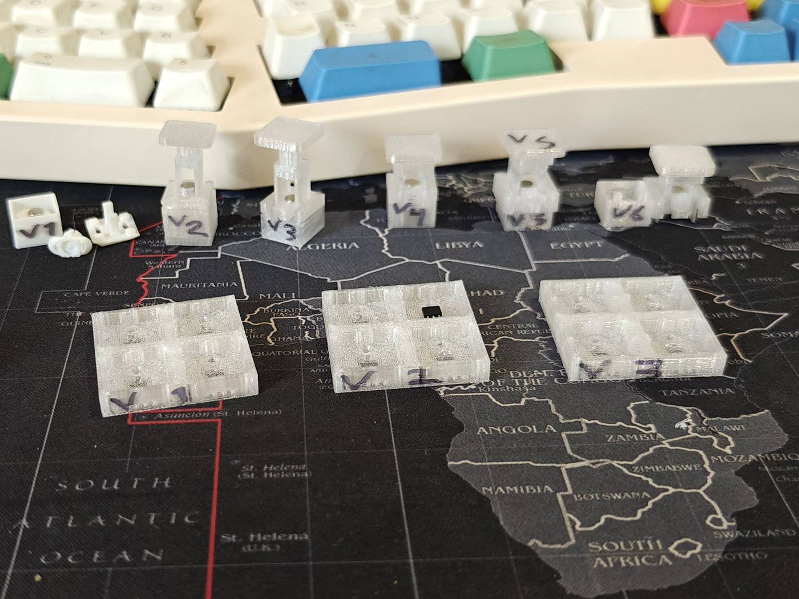
Self-funded over $500 USD from personal savings to validate the first 10 prototypes, 16-key macropad, and PCB Rev A fabrication at JLCPCB.
I am an independent maker based in Jalisco, Mexico. I started this project out of frustration with the commercial keyboard market: essential physical ergonomics—like split layouts, tenting, low-profile bodies, and wireless connectivity—are artificially split across luxury tiers alongside software locks. Furthermore, sourcing the perfect magnetic switch is difficult: while many commercial switches exist, almost all have rigid trade-offs or proprietary footprints that won't fit your board. With this setup, not only can you design and 3D print your own custom magnetic switches for pennies with radical customizability, but you also have the versatility to use virtually any commercial magnetic switch you like: the ratiometric Hall sensors simply recalibrate in software for different magnet sizes, and the 3D-printed plate can be adapted in CAD to fit any switch style.
Historically, designing custom analog hardware required venture capital and a specialized team in Silicon Valley. By using modern AI as an engineering copilot (Magpylib for magnetic simulation, KiCad 10 for multi-channel PCB routing, Python for procedural CAD, Zephyr RTOS for embedded firmware), I designed, calibrated, and sent to fabrication this entire physical stack as a solo maker in Mexico—demonstrating a new paradigm for decentralized hardware innovation.
Traditional mechanical switches rely on metal leaf springs that degrade, introduce contact chatter, and limit travel to binary on/off. FloatForce replaces mechanical contact with 3 precision neodymium magnets and a ratiometric Hall sensor.
Printed flat on its rear wall for layer lines aligned with stem motion. Features an integrated center bridge with open-jaw socket for the central S2 magnet.
Independent side panel with vertical alignment lugs. Allows effortless placement of the stem and center magnet before sliding into the 3.0 mm plate.
Smooth 0.68 mm front wall with a hollow central window that hugs the bridge without collision across the full 2.36 mm travel stroke.
Why did we etch a drawbridge onto our PCB? Because ergonomic tenting works just like a drawbridge opening in two: the outer pinky edges stay anchored on your desk while the inner thumb edges rise (0° → 25°), rotating your forearms out of painful flat twist into a natural, relaxed handshake.
The physical tenting mechanism is currently under active design. Once PCB Rev A arrives from JLCPCB, testing the board physically in hand will allow evaluating the exact tactile feel to select the optimal solution: choosing an ideal fixed-angle tenting stand, building a folding mechanism with variable angles, or creating dedicated mounting options for desks or chair armrests.
Split 30+30 column-staggered layout with native drawbridge tenting. Ultra-low profile footprint eliminates awkward wrist extension and pronation, preventing repetitive strain injuries (RSI) before they start.
Keycaps V3.2 pre-angled at -62° and FloatForce switches print 100% support-free on home FDM 3D printers. Anyone across the globe can manufacture custom alphabets, diacritics, and tactile legends without $20,000+ injection mold tooling.
Split ergonomics, drawbridge tenting, low-profile comfort, wireless readiness, and continuous analog sensing united in one accessible architecture—instead of being split across five overpriced product tiers or locked behind software paywalls.
100% open-source community where anyone can download, modify, and print the hardware at home, paired with a sustainable creator model: official certification of third-party builds, a Patreon engineering log, and community support. Engineered in Jalisco leveraging AI for CAD, physics, and PCBs.
FloatForce was designed from first principles so that anyone with an everyday desktop 3D printer can replicate, customize, and build it without proprietary tools or industrial injection molds.
Printable on standard consumer beds (Bambu Lab A1, Ender 3, or any standard 0.4mm desktop FDM printer) using standard 0.4mm nozzles, 0.16mm layer height, in PLA or PETG. 100% support-free switch housing and keycaps.
All sensors and multiplexers are inexpensive standard components: HAL403SO Hall effect sensors, TMUX1308 8:1 MUX, AO3401A P-MOSFET, N52 Ø4×1.5mm neodymium disc magnets, and SuperMini nRF52840.
Production firmware built on Zephyr RTOS v3.5 with 50µs settling time, 4-sample moving average filters, USB HID safe boot, and web-based serial calibration at 115200 baud.
| COMPONENT / SUBSYSTEM | FORMAT / TOOL | STATUS | RELEASE / AVAILABILITY |
|---|---|---|---|
| FloatForce Switch V5.0 (U-Body, Stem, Wall) | OpenSCAD / Python • STL | ✓ Validated | CERN-OHL-W v2 • Release upon Rev A validation |
| Ultimate Keycaps V3.2 (Reinforced WASD Family) | Support-Free STL • 3MF | ✓ Validated | CERN-OHL-W v2 • Release upon Rev A validation |
| Zephyr RTOS Firmware v0.3.1 | C / Zephyr • CMake | ✓ Tested on Rig | MIT • Release upon Rev A validation |
| PCB Rev A (30-Key Matte Black & Gold ENIG) | KiCad 10 • Gerbers | • In international air transit | Read Specs → |
| Low-Profile Ergonomic Split Enclosure | STEP / STL | In CAD Design | — |
Experience how continuous Hall sensor depth transforms typing into four dynamic interaction paradigms. Press and hold your physical keys (W, A, S, D, Space) or drag the switch stem slider below.
Every key responds continuously to pressure. Watch the floating musical note expand, rise in pitch, and open the synth filter as the key descends.
No joysticks required. Proportional analog travel on W, A, S, D calculates real-time vectors for stealth walking, diagonal jogging, and sprinting.
Set distinct triggers along the stroke. Half-press types a normal letter; pressing through to bottom-out instantly takes a desktop screenshot.
No third-party apps required. Continuous depth translates into proportional USB/BLE HID cursor reports across any OS—light pressure for pixel nudges, deep press for rapid screen sweeps.
FloatForce was not conceived in pure theory or ungrounded CAD software. Over months of hands-on physical prototyping in Mexico, every kinematic dimension, magnetic gap, and analog sensor response was tested by hand. Below is the unvarnished physical laboratory proof: working prototypes, live switch actuation, and the 16-key macropad that proves this technology works in the real world.
Before committing personal savings to full PCB manufacturing, we hand-built this 16-key functional macropad to physically validate switch travel, keycap retention, and magnetic repulsion. Working keys confirmed that the 3-magnet repulsive suspension produces smooth vertical travel without spring wear or mechanical binding.
Crucially, this physical prototype exposed real analog engineering challenges: hand-wired lines and protoboards suffered from stray parasitic capacitance, line-to-line crosstalk, and signal drift due to missing per-sensor decoupling capacitors. These exact bench lessons directly drove the architecture of PCB Rev A—incorporating dedicated 100 nF bypass caps at every HAL403SO, a dual-bank TMUX1308 multiplexer split that slashes bus capacitance by 34%, and unbroken ground planes.
Close-up physical test of the 3-magnet repulsive suspension. Watch how the stem glides vertically with no metal springs or contact leaf friction, spring crunch, or binding, producing a naturally smooth, progressive force curve.
Demonstrating the rapid magnetic snap upon release. The magnetic field naturally accelerates the stem back to its home position, ensuring instantaneous key resets with no mechanical leaf debounce needed.
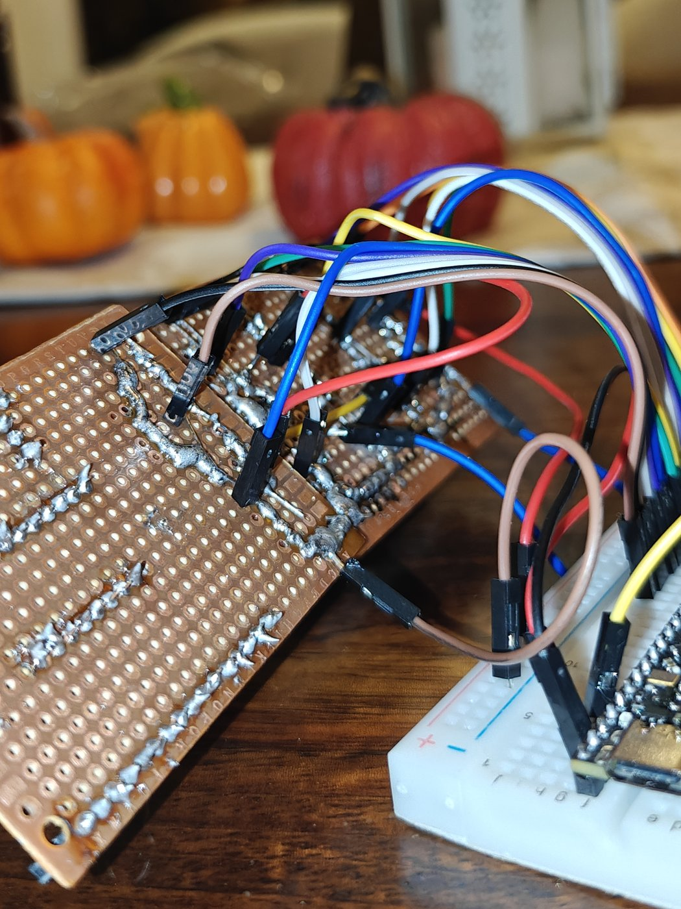
Functional prototype validating plate stability, switch retention, and keycap ergonomics under typing load.
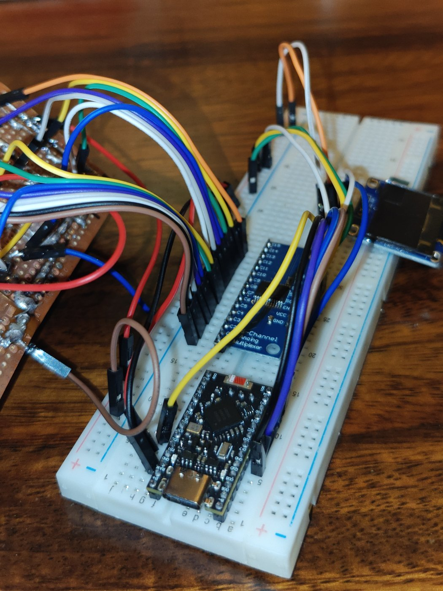
Compact Choc-spaced grid reducing finger travel distance while maintaining complete magnetic isolation between adjacent sensors.
Hand-soldered Hall sensor matrix validating settling times, decoupling capacitors, and ADC noise floor.
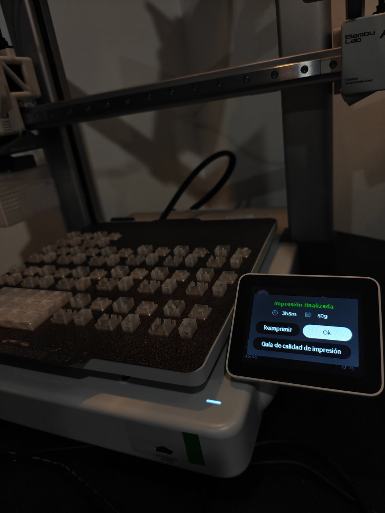
Calibrated press-fit neodymium magnet sockets with zero print supports on everyday desktop 3D printers.
We clearly separate bench-tested physical hardware from fabricated prototypes in transit and future research directions. No marketing hype; pure engineering transparency.
Commercial Hall-effect keyboards brought rapid triggers to esports, but remained locked inside conventional mass-manufacturing molds. Here is why FloatForce takes a fundamentally different path:
• Spring-loaded switches: Traditional helical metal coil springs that create mechanical friction and metallic spring ping.
• High replacement & import costs: Buying replacement magnetic switches (even on AliExpress) quickly adds up, with zero ability to print your own.
• Post-purchase mods only: You can lube or swap parts after buying, but you cannot modify the switch geometry, travel, or housing at the design stage.
• Artificial hardware & software tiers: Ergonomic tenting, low-profile cases, wireless split layouts, and advanced analog features are segmented into separate premium product lines.
• 100% Springless: 3-Magnet repulsive levitation suspension with no mechanical springs or contact leaf friction.
• Desktop 3D Printable: 100% support-free monolithic switch and keycap design printable on any standard consumer FDM bed.
• Design-Stage Freedom: Parametric CAD allows adjusting travel, magnet sockets, or tenting angle directly before printing.
• CERN-OHL-W v2 Open Hardware: Fully open schematics, Zephyr RTOS firmware, native analog mouse mode, and web tools.
When ordering our PCB Rev A from JLCPCB, we chose Matte Black solder mask with Pure White silkscreen.
The vector art etched into the front copper and silkscreen is Van Gogh’s famous Langlois drawbridge in southern France. We chose this masterpiece because a bridge represents the quintessential union of structural civil engineering and profound human emotion—just as this keyboard bridges electronics with human expression.
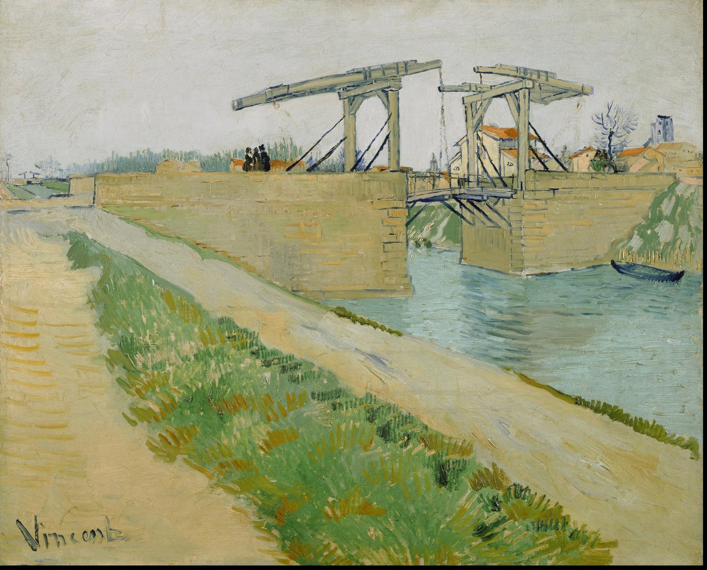
Physical PCB Rev A (JLCPCB Standard SMT): All 30 Hall sensors, multiplexers, and power-gating circuitry reside exclusively on the bottom layer. The top surface is a monolithic tactile canvas dedicated to Van Gogh's drawbridge.
Ten real hardware milestones demonstrating our rigorous physical engineering process—from early FreeCAD geometries and protoboards to sub-millimeter Bambu Lab A1 calibration and final SMT fabrication at JLCPCB.
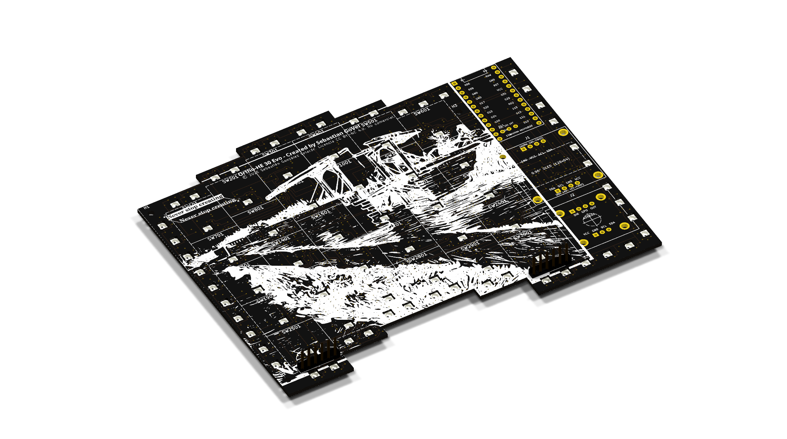
Matte Black finish with Van Gogh silkscreen, bottom SMT components, and dual trackpad headers.
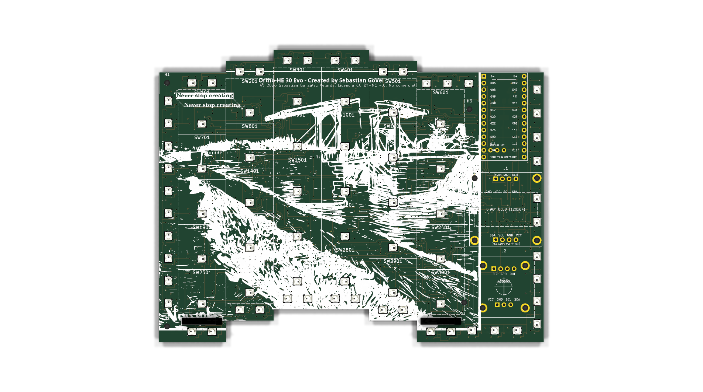
Flat top surface with Van Gogh's Langlois Bridge silkscreen art. All components routed underside.
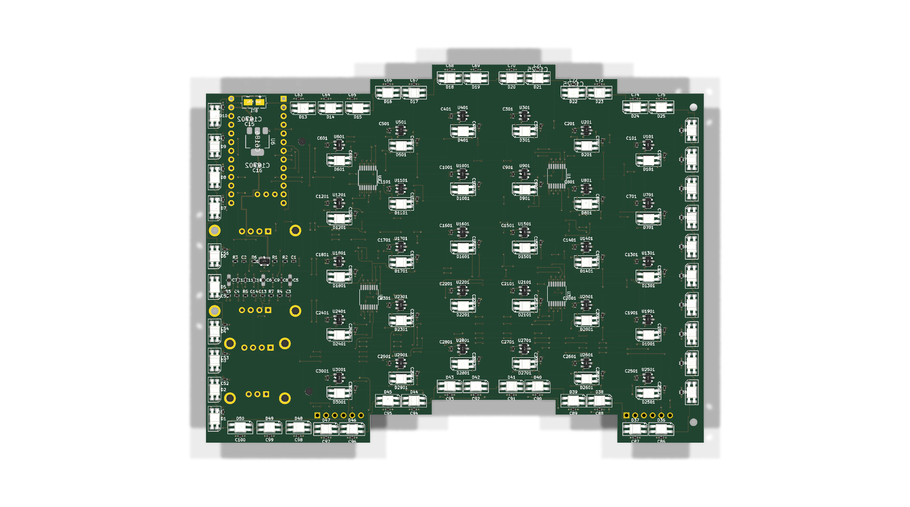
All 30 HAL403SO Hall sensors, 4x TMUX1308 analog multiplexers, and AO3401A power gating switch.
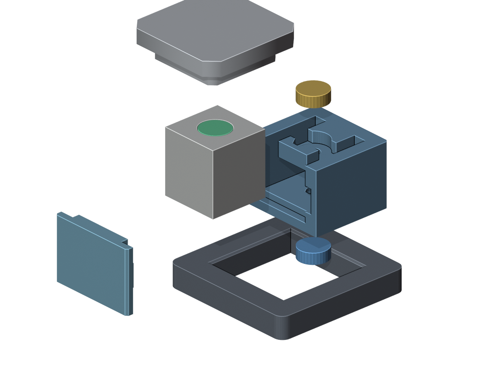
U-Body housing + Keyed SideWall. Calibrated dual-jaw cradle and flat-printed smooth stem wall.
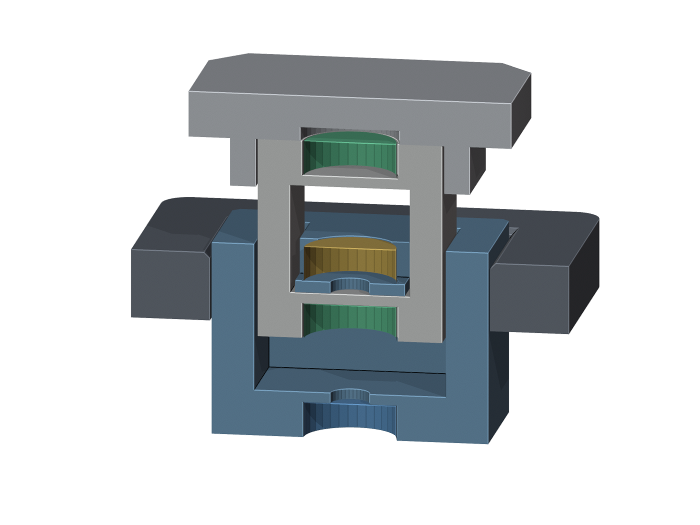
3-magnet levitation chamber. 0.45 mm magnetic barriers boost repulsive force by 25–35%.
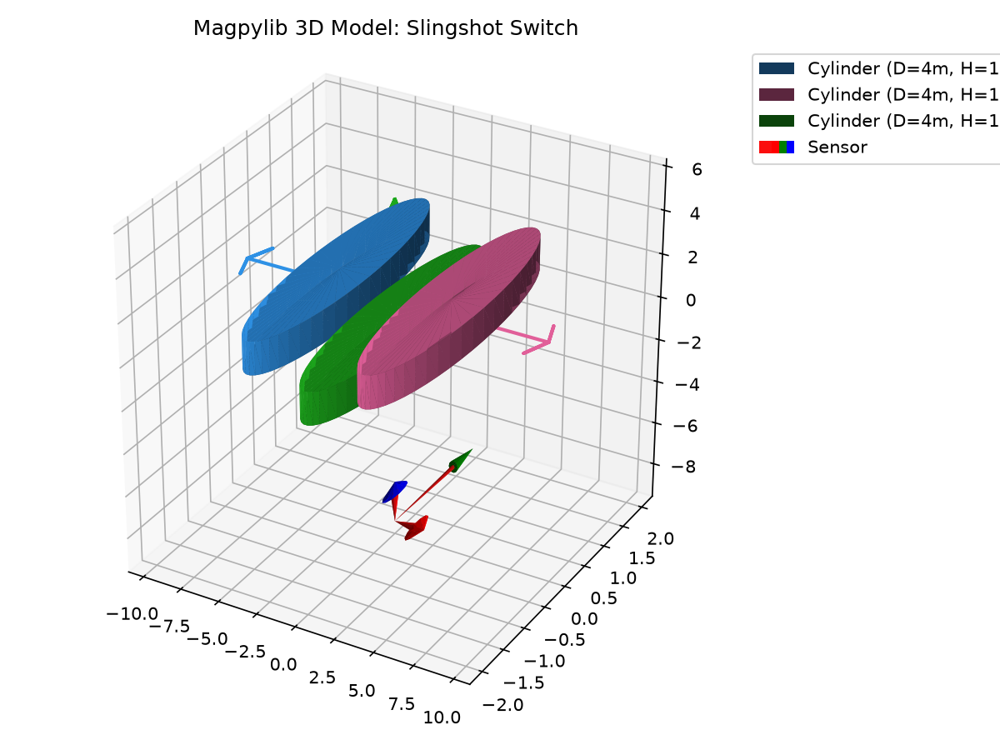
Python Magpylib model calculating flux density reaching the sensor across the 2.36 mm stroke.
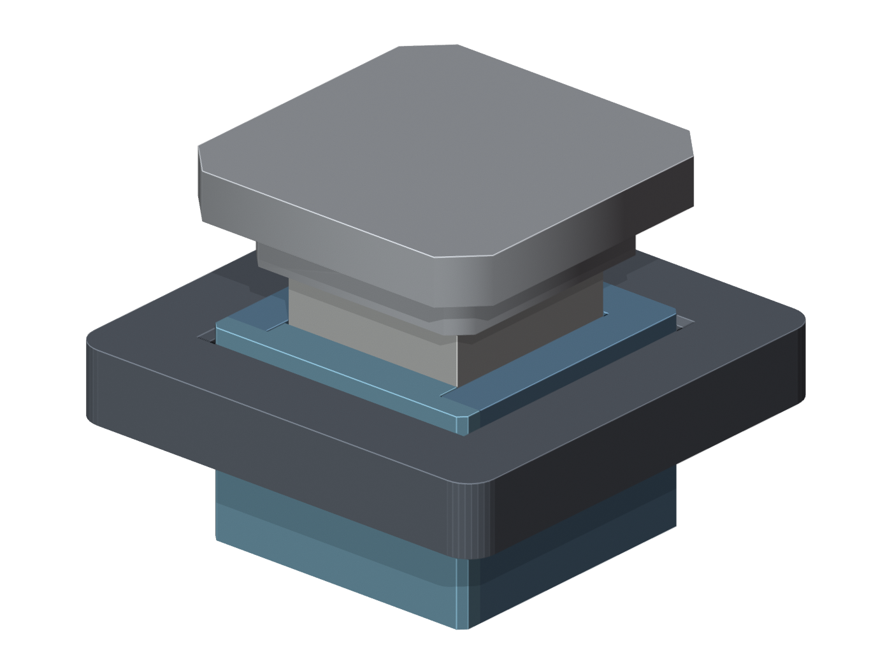
Integrated into the 3.0 mm 3D-printed plate. 8.05 mm square stem connector with zero wobble.
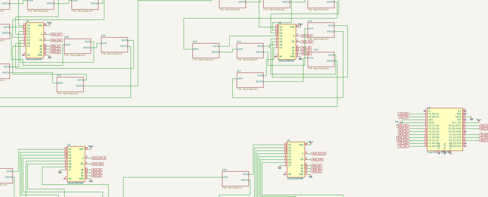
KiCad schematic showing the 4 multiplexers, 3-bit address bus A0–A2, and dual SAADC lines.
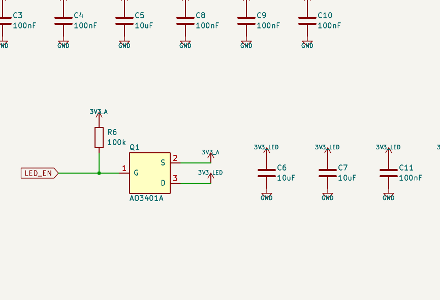
P-MOSFET switch cutting 18–30 mA of quiescent RGB drain with active-low GPIO control.
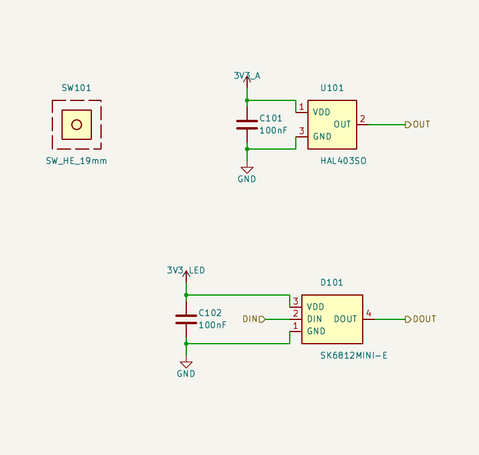
HAL403SO SOT-23 sensor with local 100 nF bypass cap and reverse-mount SK6812MINI-E LED.
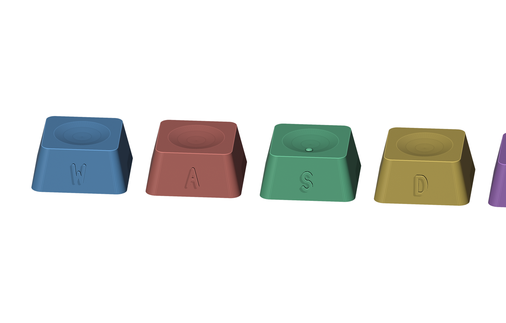
Ergonomic spherical dish with tactile homing. 4-way buttressed socket prevents layer splitting.
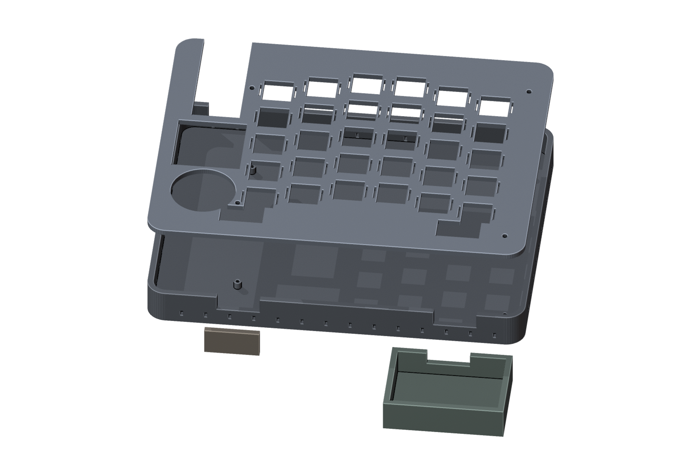
Ambidextrous case accommodating either hand. Integrated trackpad recess and OLED enclosure.
1517 backs unorthodox builders tackling difficult physical challenges. All past R&D (~$500 USD) was self-funded from personal savings as tangible proof of commitment and execution capacity—not for reimbursement. This $1,000 USD grant provides 100% forward-looking continuity runway to validate Rev A, iterate toward Rev B, and publish open-source build guides.
| ITEM & CATEGORY | COST (USD) | ENGINEERING PURPOSE & IMPACT | DELIVERABLE |
|---|---|---|---|
| 1. Rev B Prototyping ($250) Fund a Rev B PCB iteration informed by Rev A testing, plus sensors, OLEDs, encoders, batteries and magnets for working test units | $250.00 | Funding a refined Rev B PCB fabrication run informed by Rev A bench testing, plus precision Hall sensors, OLEDs, rotary encoders, LiPo batteries, and neodymium magnets for working test units. | Rev B Iteration & Working Units |
| 2. Brand, Legal Protection & Tax Advisory ($300) Register project trademark in Mexico (IMPI), prior-art search, IP consultation, and tax advisory for third-party build certification | $300.00 | Registering the project trademark (name finalized after clearance search) with the Mexican Patent and Trademark Office (IMPI), conducting a prior-art search, and obtaining professional IP and tax advisory to establish an official, legally compliant third-party certification program. | IMPI Trademark Registration, IP & Tax Advisory |
| 3. Materials R&D, 3D Tooling & Creator Setup ($450) Specialized engineering filaments, custom nozzles, BMCU 370C multicolor keycap setup / resin 3D outsourcing, plus creator audio gear for Patreon | $450.00 | Testing specialized engineering filaments and precision nozzles to dial in switch friction and magnetic tolerances, exploring BMCU 370C multicolor setups or resin test prints for tactile keycap R&D, and acquiring extra hardware including a dedicated microphone for open build tutorials. | Specialized 3D Tooling, Resin/Multicolor R&D & Audio Setup |
| TOTAL GRANT ALLOCATION | $1,000.00 | 100% Direct Product R&D • Zero Reimbursement | |
Following a 100% open-source hardware philosophy: all CAD files, circuit schematics, and Zephyr RTOS firmware will be published under CERN-OHL-W v2 immediately upon physical validation of PCB Rev A (ensuring a solid, bench-tested release for makers rather than unverified files). To build a sustainable, self-funding business, we plan three concrete monetization streams: 1) Official Certification of third-party products under a protected project trademark (name finalized after clearance search) registered with IMPI, ensuring quality and compatibility; 2) An official Patreon community offering early design access and technical build logs; and 3) Simple direct donations from enthusiasts who support open human interface hardware.
Protoboard and macropad testing exposed noise issues that shaped the Rev A design. Rev A validation starts on delivery. Rev B is a Medici grant direction — it has not been designed yet. These are the exploration areas, not Rev A specs:
Explore etching the capacitive X/Y electrode grid directly into PCB copper, assembling only the raw Azoteq controller IC (breakout-free direction).
Explore dedicated asymmetric Left and Right PCBs with perfected thumb clusters, moving beyond Rev A's reversible ambidextrous compromise.
Evaluate mounting the bare nRF52840 SoC, crystal network, and ceramic antenna on the main PCB (replacing the SuperMini daughterboard).
Explore gating the analog sensor rail (3V3_A) during SAADC conversion windows — targets of < 1.5 mA avg active and < 20 µA deep sleep are objectives, not measured Rev A specs.
Explore our $1,000 USD itemized budget table, autodidactic builder journey, and future interface roadmap.